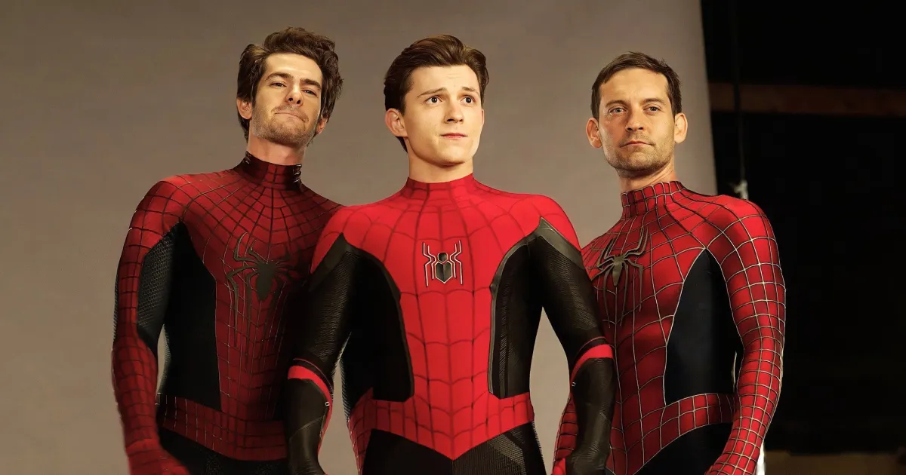
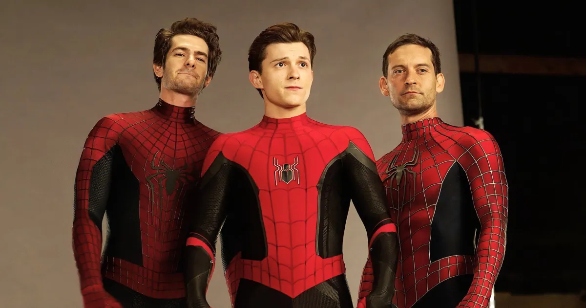

Sobre o Homem Aranha
O Homem Aranha é um super-herói fictício criado por Stan Lee e Steve Ditko. Ele apareceu pela primeira vez na revista Amazing Fantasy #15 em 1962. O personagem é o alter ego de Peter Parker, um jovem estudante que ganha superpoderes após ser mordido por uma aranha radioativa. O Homem Aranha é conhecido por sua habilidade de escalar paredes, lançar teias e seu senso de responsabilidade para proteger os inocentes.
O Homem Aranha é um dos super-heróis mais populares e icônicos da cultura pop, aparecendo em quadrinhos, filmes, séries de TV e jogos. Ele é conhecido por sua personalidade carismática, senso de humor e determinação em lutar contra o crime. O personagem tem uma base de fãs dedicada e continua a ser uma figura importante no universo dos super-heróis.